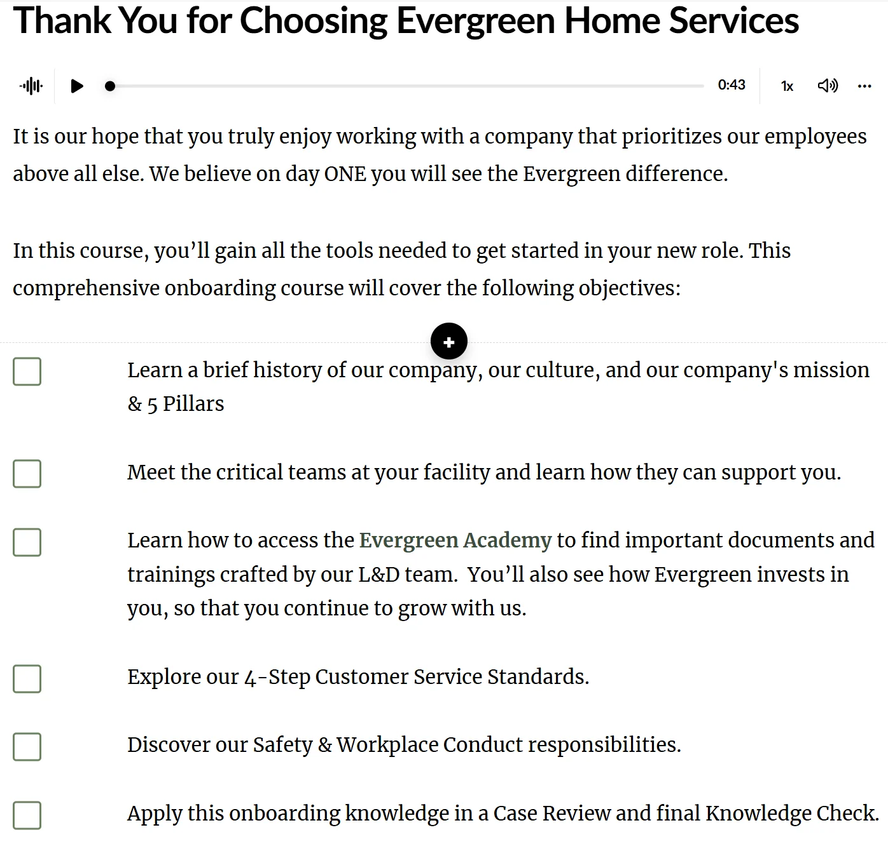
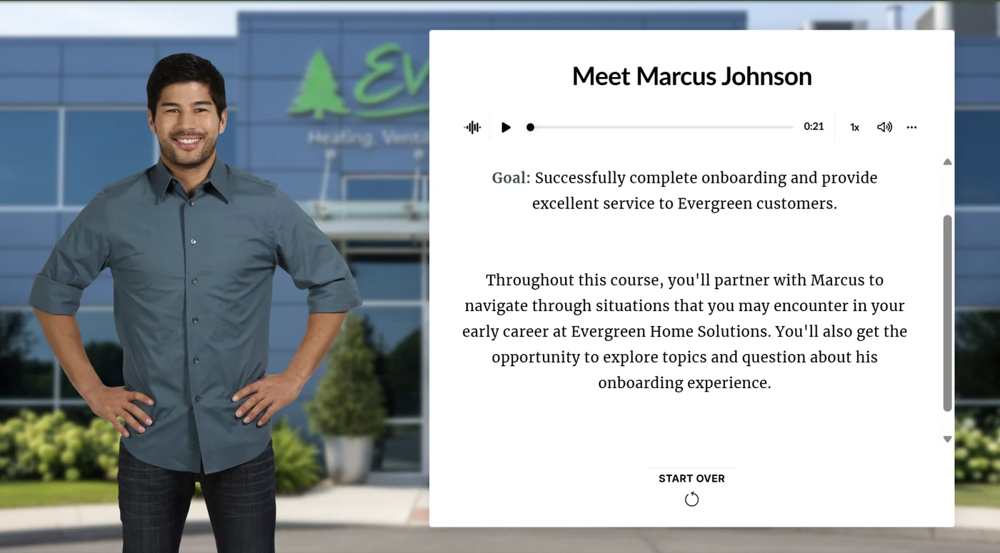
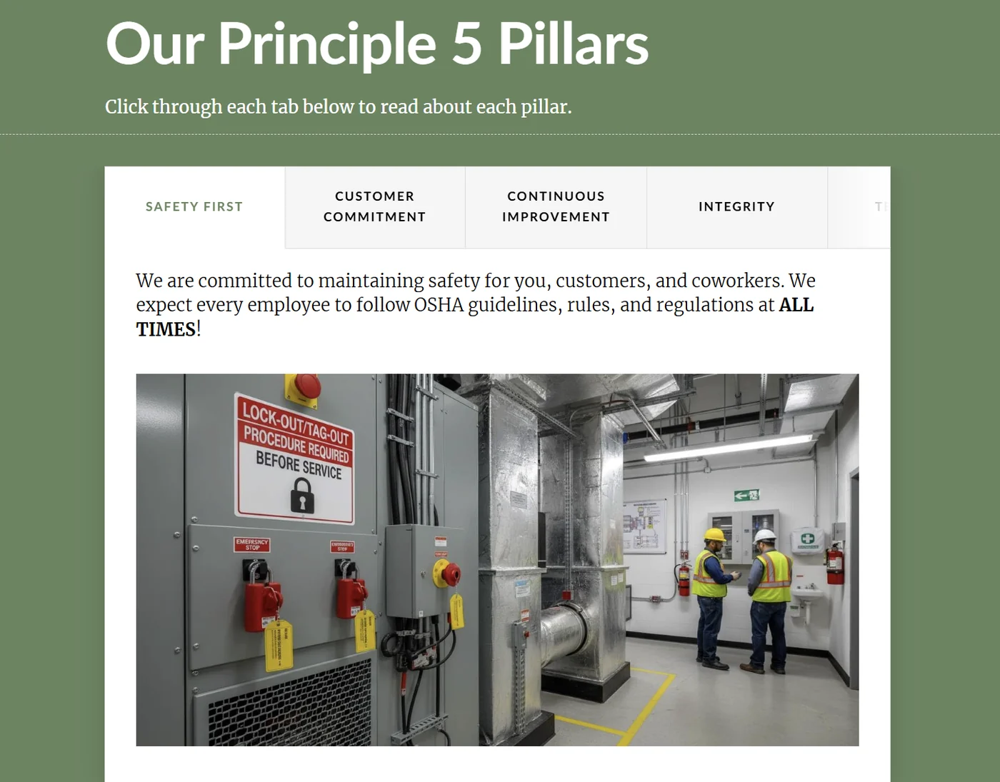
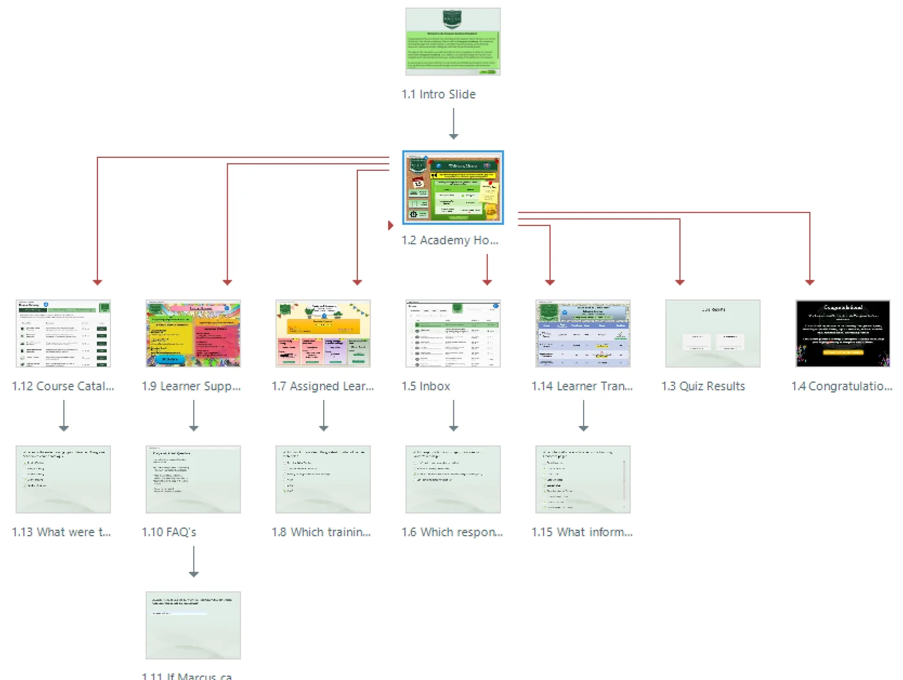
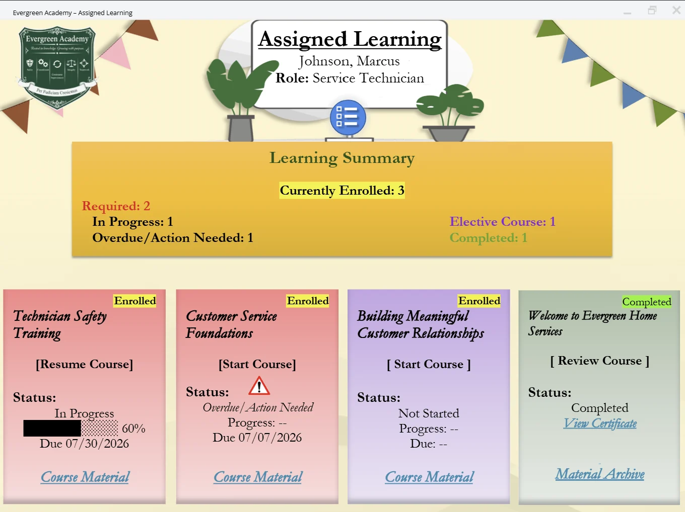

Project Preview
Selected course screens.
These selected screens preview the onboarding course, Evergreen Academy simulation, scenario-based learning moments, and key learner interactions.

Introduces the course structure and expectations for new employees.

Frames the course through Marcus Johnson, a newly hired service technician.

Uses tabs and visuals to introduce Evergreen's guiding principles.

Shows the branching structure of the Evergreen Academy LMS simulation.

Serves as the simulated LMS hub for assigned learning, catalog navigation, support, inbox, and transcript access.

Shows course status, completion indicators, overdue training, elective learning, and material access.